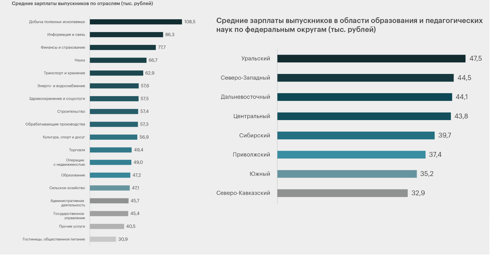
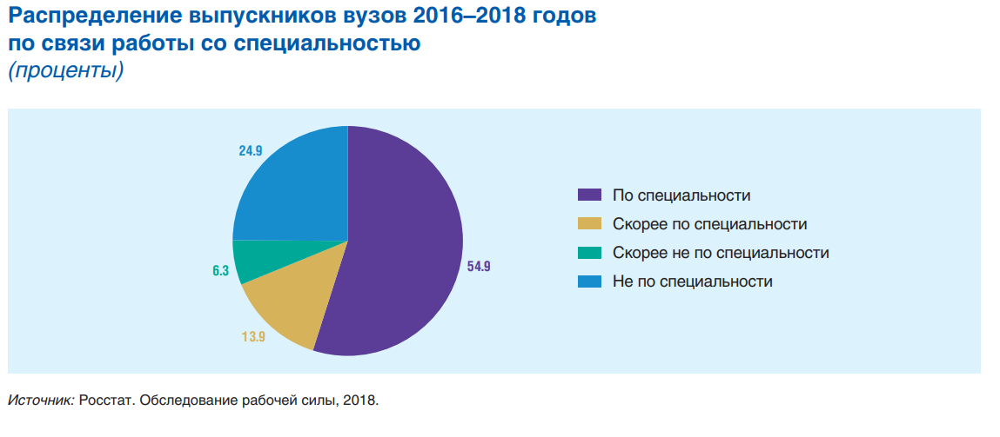
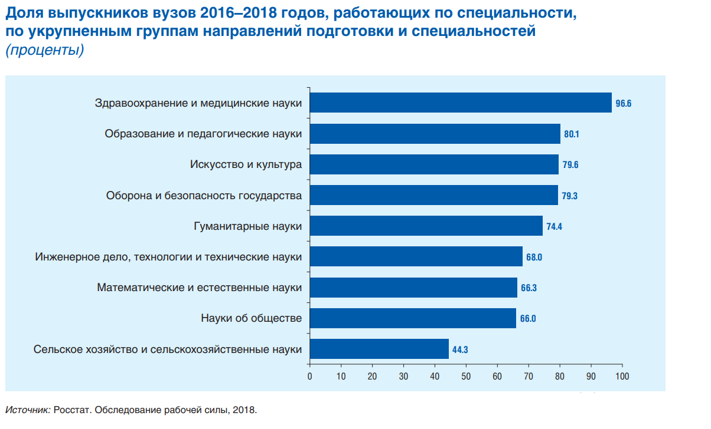
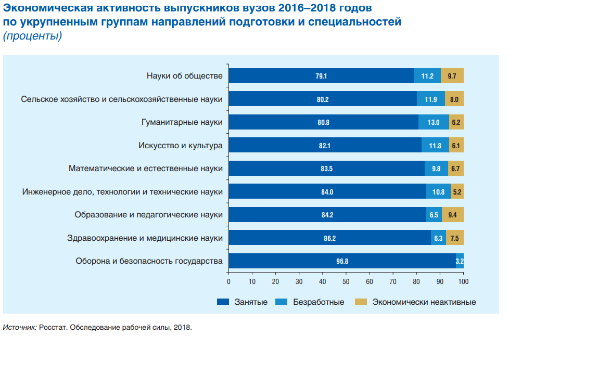
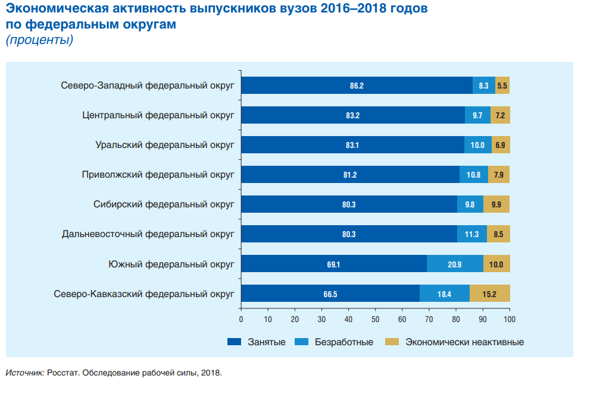
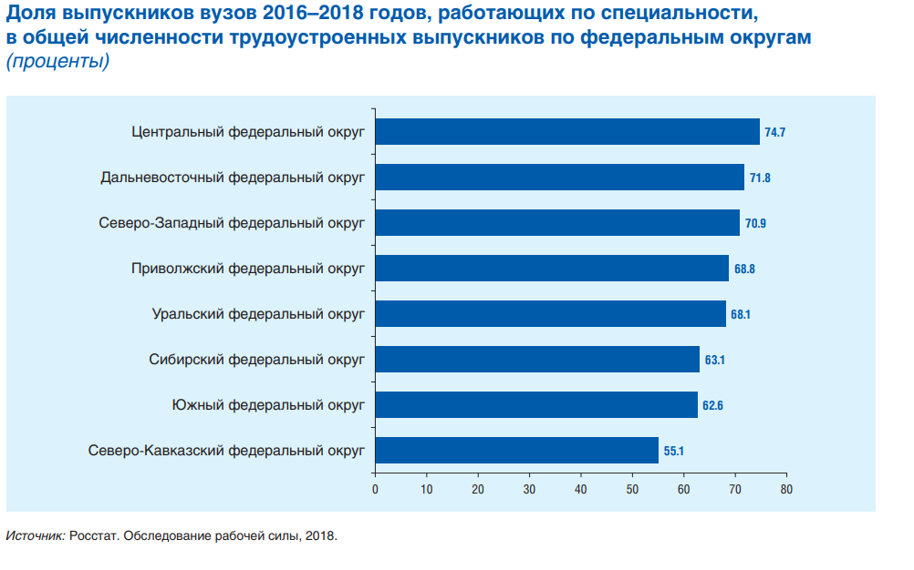
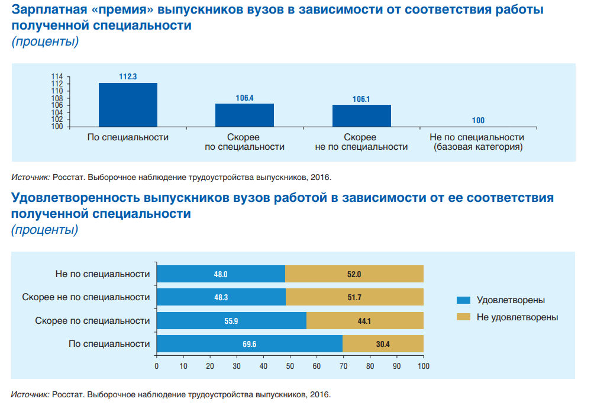

естественные и математические науки
гуманитарные науки
технологии
социально-экономические науки
В профильные классы набирают школьников, уже показавших хорошие результаты по предмету. Если в аттестате за 9 класс у вас тройка по математике, в физико-математический класс вас, скорее всего, не возьмут.
Если у вас есть ярко выраженные способности или склонности, в профильном классе вам помогут их развить. Например, вы плохо разбираетесь в программировании, но увлекаетесь биологией. Или «плаваете» в литературе, но сильны в математике. В профильном классе не придётся тратить время на предметы, которые даются не очень хорошо.
Выбирайте профильный класс, ориентируясь на предметы, которые вы собираетесь сдавать. Как правило, подготовке к ЕГЭ и разбору сложных заданий в таких классах отведено больше времени.
Например, вы любите биологию, но не очень хорошо разбираетесь в химии. В этом случае биолого-химическое направление может вам и не подойти. Есть риск, что вы отстанете от одноклассников, начнёте получать плохие оценки и потеряете мотивацию. В этом случае лучше выбрать общеобразовательный профиль, а биологией дополнительно заниматься самостоятельно или с репетитором.
Допустим, вы хотите в профильный класс, чтобы углубленно изучать литературу. А в вашей школе есть только гуманитарный профиль, где к ней прилагается история с обществознанием. В этом случае можно попробовать поискать школы с узким филологическим профилем. И наоборот, если вы никак не можете решить, поступать на филолога или историка, ему подойдет профиль с более широким набором гуманитарных предметов. Встречаются и ещё более редкие профильные классы в школах, например: по журналистике, праву, искусству. Возможно, вам нужен один из них.
В профильных классах задают больше домашних заданий и предъявляют более высокие требования к ученикам. Не каждый ученик легко выдержит подобную учебную и психологическую нагрузку. Если от вас потребуются все силы, чтобы «соответствовать» уровню профиля, к ЕГЭ вы можете прийти физически и морально истощённым. Возможно, в таком случае больше подойдёт обычный класс и дополнительные занятия с репетитором по нужным предметам.
В России почти 900 вузов, а направлений обучения еще больше — 15 тысяч. Как из такого разнообразия выбрать, на каком направлении получать будущую профессию, и найти вуз мечты? Вуз словно трамплин: если хорошо оттолкнёшься, то быстро достигнешь карьерных высот. Не все дипломы одинаково полезны. Где работают выпускники вузов и какие у них зарплаты. Что повышает шансы на хорошую работу после вуза? Вот что говорит статистика.
Средняя зарплата в России по направлениям деятельности рассчитана на основе вакансий размещенных в свободном доступе, а также информации от пользователей проживающих в России.
Средняя зарплата в системе образования в России составляет от 30 290 ₽ и до 267 630 ₽. В среднем ректор вуза получает 267 630 ₽, директор колледжа - 169 710 ₽, директор школы зарабатывает 91 380 ₽, заведующий детским садом в России получает на руки в месяц 81 590 ₽, преподаватель в колледже соответственно 69 190 ₽.

Средняя зарплата в IT в России составляет от 41 520 ₽ и до 100 140 ₽. В среднем go разработчик получает 100 140 ₽, java разработчик - 98 180 ₽, ios разработчик зарабатывает 88 900 ₽, c# разработчик в России получает на руки в месяц 85 480 ₽, data scientist соответственно 85 480 ₽.
Средняя зарплата в дизайне в России составляет от 49 390 ₽ и до 66 490 ₽. В среднем ux/ui дизайнер получает 66 490 ₽, гейм-дизайнер - 66 430 ₽, дизайнер интерьера зарабатывает 59 160 ₽, 3d-дизайнер в России получает на руки в месяц 55 250 ₽, веб-дизайнер соответственно 53 350 ₽.
Средняя зарплата в маркетинге в России составляет от 29 800 ₽ и до 46 410 ₽. В среднем маркетолог получает 46 410 ₽, event-менеджер - 43 470 ₽, pr-менеджер зарабатывает 42 990 ₽, директолог в России получает на руки в месяц 42 990 ₽, smm-специалист соответственно 36 640 ₽.
Средняя зарплата в бухгалтерии и финансах в России составляет от 44 940 ₽ и до 86 950 ₽. В среднем трейдер получает 86 950 ₽, аудитор - 64 480 ₽, главный бухгалтер зарабатывает 62 520 ₽, менеджер по кредитованию в России получает на руки в месяц 59 590 ₽, финансовый аналитик соответственно 53 240 ₽.
Средняя зарплата у административного персонала в России составляет от 31 750 ₽ и до 75 230 ₽. В среднем директор по персоналу получает 75 230 ₽, помощник руководителя - 45 430 ₽, hr-специалист зарабатывает 43 470 ₽, менеджер по закупкам в России получает на руки в месяц 42 500 ₽, заведующий хозяйством соответственно 38 100 ₽.
Средняя зарплата в юриспруденции в России составляет от 30 290 ₽ и до 291 820 ₽. В среднем судья получает 291 820 ₽, нотариус - 135 810 ₽, риэлтор зарабатывает 76 200 ₽, юрист по банкротству в России получает на руки в месяц 57 150 ₽, юрист соответственно 56 660 ₽.

Средняя зарплата в медицине в России составляет от 32 730 ₽ и до 94 270 ₽. В среднем главный врач получает 94 270 ₽, заведующий отделением - 70 830 ₽, стоматолог зарабатывает 61 060 ₽, хирург в России получает на руки в месяц 60 570 ₽, ортодонт соответственно 58 620 ₽.
Средняя зарплата в общественном питании и ресторанах в России составляет от 33 220 ₽ и до 58 130 ₽. В среднем шеф-повар получает 58 130 ₽, повар - 42 990 ₽, официант зарабатывает 37 120 ₽, бариста в России получает на руки в месяц 36 150 ₽, бармен соответственно 35 660 ₽.
Средняя зарплата в торговле в России составляет от 27 350 ₽ и до 59 110 ₽. В среднем менеджер по продажам получает 59 110 ₽, директор магазина - 53 730 ₽, продавец автомобилей зарабатывает 51 780 ₽, товаровед в России получает на руки в месяц 42 990 ₽, торговый представитель соответственно 40 540 ₽.
Средняя зарплата в индустрии красоты в России составляет от 29 310 ₽ и до 57 640 ₽. В среднем массажист получает 57 640 ₽, фитнес-тренер - 57 640 ₽, барбер зарабатывает 56 660 ₽, косметолог в России получает на руки в месяц 51 290 ₽, стилист соответственно 40 540 ₽.
Средняя зарплата на производстве в России составляет от 34 680 ₽ и до 64 480 ₽. В среднем инженер по эксплуатации получает 64 480 ₽, главный инженер - 60 570 ₽, инженер-конструктор зарабатывает 60 080 ₽, инженер по качеству в России получает на руки в месяц 57 150 ₽, инженер асу соответственно 55 200 ₽.
Средняя зарплата в транспорте и логистике в России составляет от 25 400 ₽ и до 62 520 ₽. В среднем директор по логистике получает 62 520 ₽, инженер по обслуживанию - 56 180 ₽, водитель зарабатывает 42 990 ₽, водитель такси в России получает на руки в месяц 42 500 ₽, автомеханик соответственно 38 590 ₽.
Средняя зарплата в строительстве и ЖКХ в России составляет от 33 220 ₽ и до 82 060 ₽. В среднем архитектор получает 82 060 ₽, прораб - 61 550 ₽, инженер-технолог зарабатывает 60 570 ₽, газосварщик в России получает на руки в месяц 56 660 ₽, инженер-проектировщик соответственно 54 710 ₽.
Средняя зарплата в силовых структурах в России составляет от 42 010 ₽ и до 123 230 ₽. В среднем полковник полиции получает 123 230 ₽, майор полиции - 82 690 ₽, лейтенант, прапорщик полиции зарабатывает 58 350 ₽, спасатель, пожарный в России получает на руки в месяц 53 730 ₽, инженер по охране труда соответственно 51 290 ₽.
Средняя зарплата в сельском хозяйстве в России составляет от 35 660 ₽ и до 45 430 ₽. В среднем зоотехник получает 45 430 ₽, агроном - 42 500 ₽, тракторист зарабатывает 39 570 ₽, механизатор в России получает на руки в месяц 35 660 ₽.
Средняя зарплата в работе без специальности в России составляет от 23 940 ₽ и до 38 590 ₽. В среднем фасовщик получает 38 590 ₽, горничная - 35 660 ₽, оператор call-центра зарабатывает 33 710 ₽, маркировщик в России получает на руки в месяц 33 220 ₽, грузчик соответственно 32 730 ₽.
Качество обучения на онлайн-курсах по профессиям принято оценивать по результатам, а под ними чаще всего понимают трудоустройство. Было ли оно успешным, судят и по самому факту получения выпускниками желаемой работы, и по достигнутому ими уровню доходов. В традиционных вузах и колледжах качество образования чаще оценивают всё-таки по тому, насколько усвоен учебный материал, — проще говоря, по результатам тестов и оценкам. Но и тут полезно знать, сколько и где зарабатывают выпускники тех или иных программ. Именно на таких показателях основан доклад Высшей школы экономики «Выпускники высшего образования на российском рынке труда: тренды и вызовы». Проректор ВШЭ и заведующий лабораторией исследований рынка труда Сергей Рощин представил этот доклад на круглом столе в рамках XXIII Ясинской международной научной конференции по проблемам развития экономики и общества НИУ ВШЭ.
Некоторые выпускники всё-таки выпадают из мониторинга, потому что продолжают учёбу или работают за рубежом (или в России, но без официального трудоустройства). Также в нём не учитываются выпускники, работающие в силовых структурах. Ещё около 7% «теряются» из-за ошибок в данных. Но даже с этими оговорками Мониторинг Роструда — самая полная из существующих база данных о трудоустройстве выпускников школ, СПО и вузов. Представленный на Ясинской конференции доклад основан на данных о выпускниках бакалавриата, специалитета и магистратуры 2018 года. Информация актуальна на конец 2021 года, когда большинство из них нашли постоянную работу или продолжили учёбу. Расскажем про ключевые выводы исследования.
Начнём с общих оценок: 69% выпускников бакалавриата 2018 года осенью 2021-го были официально трудоустроены; их средняя зарплата в это время составила 53,5 тысячи рублей. Выпускники магистратуры 2018 года бакалавров по этим показателям обгоняли: 77,5% имели официальное трудоустройство; 75,2 тысячи рублей составила их средняя зарплата. Значит ли это, что более высокий уровень образования увеличивает ценность выпускника на рынке труда? Похоже, так и есть.
Конечно, магистры отличаются от бакалавров не только записями в дипломах — первые старше и обычно уже накопили больше профессионального опыта. Но и диплом всё же кое-что значит: у тех бакалавров-2018, кто окончил к 2021 году ещё и магистратуру, зарплаты выше, чем у однокурсников без магистерской степени — в среднем 58,6 тысячи рублей.
Такой вывод следует из высоких показателей трудоустройства выпускников в области компьютерных и математических наук: 77,8% бакалавров и 82,6% магистров трудоустроены к осени 2021 года; средние зарплаты у них — 102,1 и 123,7 тысячи рублей соответственно. Для этих выпускников высшее образование действительно стало пропуском к высокооплачиваемым рабочим местам.
Но средние оценки не отражают дисбаланс. У выпускников вузов Свердловской области, Москвы и Санкт-Петербурга, получивших образование в сфере компьютерных и математических наук, средние зарплаты больше 100 тысяч рублей. Выпускники тех же специальностей и направлений подготовки из вузов Северо-Кавказского федерального округа зарабатывают в среднем 39 тысяч. В отдельных регионах других округов показатели ещё ниже: например, в Брянской области — 25,5 тысячи рублей, Республике Коми — 37,5 тысячи, Калмыкии — 31,8 тысячи.
Уровень зарплат выпускников в области образования и педагогических наук один из самых низких среди всех выделенных авторами доклада категорий — ниже только у выпускников сельскохозяйственных направлений:
Относительно высокие (смотря с чем сравнивать, конечно) доходы выпускников-медиков авторы доклада связывают с «коронавирусными» выплатами врачам. К тому же у медиков самые высокие показатели трудоустройства (84%), и 77% из них работают по специальности, в организациях здравоохранения.
Выпускники в области образования и педагогики тоже в основном трудоустроены (76% среди бакалавров и 81% среди магистров), и 62% из них работают именно в сфере образования. Но им такая лояльность профессии не приносит материальных бонусов ни в одном из федеральных округов страны.
Авторы доклада не считают, что низкие зарплаты выпускников этой категории говорят о недостаточном качестве их обучения. Скорее, они отражают недофинансирование всей системы общего образования.
Ситуация с выпускниками в области сельского хозяйства тоже сложная, но совсем по другим причинам, чем в случае с педагогами. В этой категории выпускников 2018 года только 15,4% работают собственно в сельскохозяйственной отрасли.
Это свидетельствует, по мнению авторов доклада, об «архаичном по качеству образования» предложении на рынке труда в области сельского хозяйства. В большинстве отраслей, подчеркнул на презентации Сергей Рощин, диплом по одному из сельскохозяйственных направлений не даёт никакой отдачи.
Выше всего зарплаты у тех, кто трудоустроился в добыче полезных ископаемых, сферах информации и связи, финансов и страхования. Все они довольно небольшие и вместе объединяют 17,6% выпускников 2018 года.
Аналитический материал посвящен проблеме трудоустройства выпускников вузов по полученной специальности. Оценивается доля выпускников, работающих по специальности, в том числе по укрупненным группам специальностей, субъектам Российской Федерации и отраслям. Рассматривается экономическая активность выпускников в зависимости от полученной специальности и региона. Изучается влияние работы по специальности на уровень заработной платы и удовлетворенность работой. Исследование основано на данных Обследования рабочей силы и Выборочного наблюдения трудоустройства выпускников, проведенных Росстатом в 2018 и 2016 гг. соответственно.
Треть российских выпускников работают не по специальности. Проблема трудоустройства, в том числе по специальности, наиболее остро ощущается в Южном и Северо-Кавказском федеральных округах.
Наиболее привержены своей профессии выпускники медицинских специальностей; не по специальности чаще всего работают выпускники в области сельскохозяйственных и общественных наук.
Выпускники, трудоустроенные по специальности, имеют более высокую заработную плату и более удовлетворены работой, чем те, кто работает не по специальности.
Анализ трудоустройства выпускников, в том числе по полученной специальности, позволяет оценить, насколько востребованы на рынке труда знания и навыки, приобретенные в процессе обучения в вузе, а также выявить различия в востребованности компетенций, формируемых по различным направлениям подготовки и специальностям. Существенные различия в уровне развития систем образования и рынка труда между субъектами Российской Федерации актуализируют исследование региональных различий в трудоустройстве выпускников. Значимым вопросом является влияние работы по специальности на заработную плату выпускников и удовлетворенность работой.
Согласно данным Обследования рабочей силы Росстата, 55% выпускников 2016–2018 гг. работают по специальности, еще 14% – скорее по специальности, скорее не по специальности трудятся 6% выпускников, совсем не по специальности – 25% (рис. 1). Для определения данного показателя использовались результаты самооценки выпускников. Им предлагалось ответить на вопрос «Считаете ли Вы, что Ваша работа связана со специальностью, полученной во время обучения?», выбрав один из вариантов ответа: «Да»; «Скорее, да»; «Скорее, нет»; «Нет». Если представить переменную в бинарном виде, окажется, что по специальности работают 69% выпускников российских вузов.
Наиболее приверженными полученной в вузе специальности оказались выпускники в области здравоохранения и медицинских наук (97%), образования и педагогических наук (80%), искусства и культуры (79.6%), а также обороны и безопасности государства (79%). Реже всех по специальности работают те, кто недавно получил диплом о высшем образовании в области сельского хозяйства (44%), математических и естественных наук, наук об обществе (по 66%). Вопреки сложившемуся стереотипу, выпускники гуманитарных специальностей работают по специальности чаще, чем дипломированные инженеры.
 Самый высокий уровень безработицы характерен для молодых специалистов в сфере гуманитарных наук (13%), сельского хозяйства (12%), искусства и культуры (12%), общественных наук (11%). Среди выпускников инженерных специальностей проблемы с трудоустройством испытывает каждый десятый (рис. 3). Максимальный уровень занятости у выпускников, занятых в общественном секторе, а именно в сфере здравоохранения, образования, обороны и безопасности государства.
Наиболее сложная ситуация наблюдается в Северо-Кавказском и Южном федеральном округах: здесь уровень занятости окончивших вузы в период с 2016 по 2018 г. составляет лишь 66.5 и 69% соответственно, а уровень безработицы – 18.4 и 21% (рис. 4). В Северо-Кавказском округе зафиксирована высокая доля экономически неактивных выпускников (15%). Самым благоприятным оказалось положение выпускников в Северо-Западном и Центральном федеральных округах.
Работу по специальности легче всего найти в Центральном, Дальневосточном и СевероЗападном федеральном округах. В Сибирском, Южном, и особенно Северо-Кавказском федеральных округах выпускники сталкиваются при решении этого вопроса с существенными проблемами.
Результаты кросс-табуляции отраслей занятости (по ОКВЭД) и укрупненных групп специальностей (табл. 1) позволяют оценить, в какие отрасли экономики чаще всего идут работать после окончания вуза выпускники различных образовательных специальностей.
Выпускники, выбравшие специальности в области здравоохранения, образования, обороны и государственной безопасности, чаще сосредотачиваются в одной сфере (отрасли занятости), соответствующей полученной профессии. Среди тех, кто получил диплом в области медицинских наук, таких 71%, образования и педагогических наук – 76%, обороны и безопасности государства – 85%.
 Выпускники других специальностей после окончания вуза не концентрируются в одной области, а рассредоточиваются по различным отраслям занятости. В частности, инженеры чаще всего работают в таких отраслях, как обрабатывающие производства, транспортировка и хранение, общественная безопасность. Выпускники в сфере сельского хозяйства представлены почти во всех отраслях экономики, прежде всего в обрабатывающих производствах и торговле; в сфере сельского хозяйства работают лишь 23% из них. Молодые специалисты, получившие диплом в области общественных наук, также рассредоточены по различным отраслям экономики. Наиболее часто они заняты в госуправлении и торговле. Большинство выпускников в области гуманитарных наук находят работу в организациях образования, культуры и спорта.
Размер «зарплатной премии» за работу по специальности рассчитывается как отношение средней заработной платы выпускников, работающих по специальности, скорее по специальности или скорее не по специальности, к средней заработной плате выпускников в группе, взятой за базу (работающие не по специальности). В среднем выпускники, работающие по специальности, зарабатывают на 12% больше тех, кто работает не по специальности (рис. 6). При этом размер «премии» уменьшается со снижением степени соответствия работы полученной специальности. Выпускники, которые отметили, что работают скорее по специальности, зарабатывают лишь на 6% больше тех, кто работает не по специальности.
Работающие по специальности выпускники в среднем существенно более удовлетворены работой (рис. 7). Причем с увеличением степени соответствия работы полученной специальности удовлетворенность растет.
Проведенный анализ показал, что чуть менее трети российских выпускников работают не по специальности, полученной в вузе. Чаще всего это лица, получившие диплом о высшем образовании в области сельскохозяйственных и общественных наук. Для этих специальностей характерны высокая безработица и относительно низкий уровень занятости. Наиболее привержены своей профессии выпускники медицинских специальностей. Проблема трудоустройства, в том числе по специальности, острее всего ощущается в Северо-Кавказском и Южном федеральных округах. Выпускники медицинских, педагогических специальностей и специальностей, связанных с обороной и безопасностью государства, как правило, концентрируются в соответствующей отрасли занятости, в то время как выпускники в области сельского хозяйства, общественных наук и инженеры рассредоточены по различным секторам экономики. Выпускники, работающие по специальности, имеют более высокую заработную плату и больше удовлетворены работой. Чем больше соответствие работы полученной специальности, тем выше заработная плата и удовлетворенность работой.